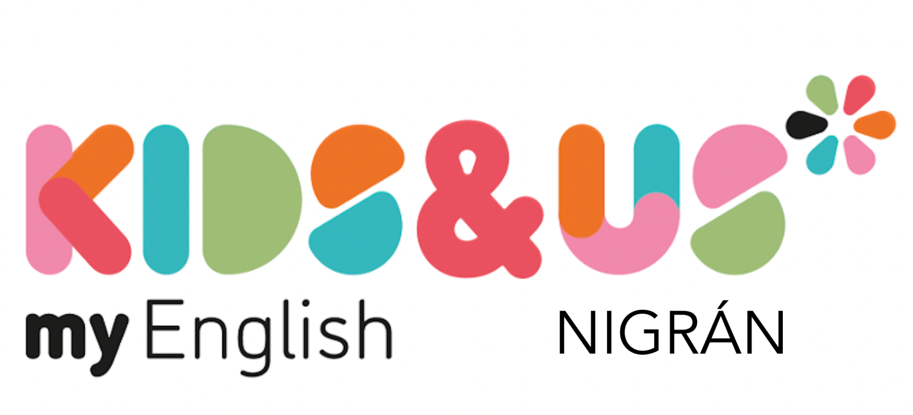
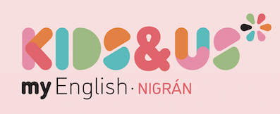

Guía para familias
Entradas y salidas · Babies
Cursos Mousy y Linda

Bienvenida
Queridas familias:
Bienvenidas a Kids&Us Nigrán.
En esta guía encontraréis la información más importante sobre el funcionamiento de las entradas y salidas de la etapa Babies, así como algunas indicaciones que os ayudarán a que el día a día en el centro sea lo más cómodo, ordenado y seguro posible.
Os pedimos que la leáis atentamente y, por supuesto, que no dudéis en consultarnos cualquier duda que pueda surgir.
Entrada del alumnado
Para facilitar la llegada de vuestro hijo o hija y garantizar una entrada tranquila y segura, os pedimos que sigáis estas indicaciones:
- Acceso: la entrada se realizará siempre por la puerta principal del centro.
- Llegada al centro: podéis acceder al hall o recepción y esperar en la zona de la banqueta amarilla. Allí os recogerá el personal docente para acompañar al alumnado hasta el aula.
- Carritos: podéis dejar los carritos en el hall o recepción del centro.
- Punto de entrada y salida: tanto la entrada como la salida se realizarán por la puerta principal del centro.
Importante · Curso Linda
Durante el periodo de adaptación, el alumnado de Linda accederá al centro acompañado por sus familias a través de la puerta principal.
Una vez superado este periodo y cuando vuestro hijo o hija esté preparado para comenzar a entrar solo al aula, os informaremos previamente de cómo se realizará el proceso y os daremos algunas pautas y consejos para facilitar esta transición.
Comunicaciones del centro
Para asegurarnos de que recibís nuestros avisos y comunicaciones importantes, os pedimos que realicéis estas dos acciones:
-
Guardad en vuestra agenda el número de teléfono del centro.
-
Uníos a nuestro canal oficial de WhatsApp:
Unirme al canal de WhatsApp de Kids&Us NigránDe esta manera podremos manteneros al tanto de cualquier comunicación relevante durante el curso.
Horario de atención al público
Nuestro horario de atención es:
16:00 a 19:00 h
Estaremos encantados de atenderos y ayudaros en todo aquello que necesitéis.